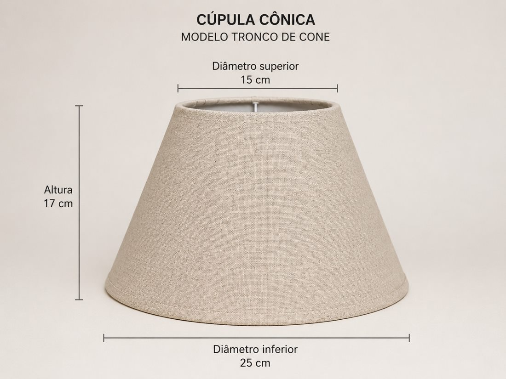

Reforma de cúpulas
Reforma de cúpulas para
abajur e luminárias
Renove cúpulas de abajur e luminárias antigas, desgastadas ou danificadas. Avaliamos estrutura, formato, medidas, tecido e acabamento para preservar as proporções da peça sempre que tecnicamente viável.
Quando faz sentido
Quando vale reformar uma cúpula
- 01
Revestimento desgastado
Tecido manchado, desbotado, rasgado ou envelhecido pode justificar uma nova avaliação de acabamento.
- 02
Modelo difícil de substituir
Peças antigas ou feitas sob medida podem ter proporções específicas que vale a pena preservar.
- 03
Projeto com medida específica
Quando a cúpula precisa continuar compatível com a base, luminária ou composição existente.
Avaliação técnica
Cada reforma começa pela peça que você já tem
Não tratamos reforma como um produto genérico. O estado da estrutura, as medidas e o acabamento desejado precisam ser avaliados antes de confirmar a execução.
- 01Fotos e medidas
Envie imagens da cúpula e, quando possível, diâmetros ou lados e altura.
- 02Estrutura e formato
Avaliamos se o aramado e a geometria podem ser aproveitados ou se exigem outra solução.
- 03Tecido e acabamento
Definimos as possibilidades de revestimento e acabamento de acordo com a peça e o resultado desejado.

Como funciona
Da foto da peça ao orçamento
- 01
Envie fotos
Mostre a cúpula inteira e os pontos de desgaste ou dano que precisam de atenção.
- 02
Informe as medidas
Se possível, envie as principais dimensões e diga se deseja manter o formato e a cor.
- 03
Receba a avaliação
A Center verifica a viabilidade e orienta os próximos passos para orçamento e execução.
Dúvidas comuns
Antes de enviar sua cúpula
As respostas abaixo são orientações gerais. A confirmação depende da avaliação da peça.
- 01
Vocês reformam uma única peça?
Sim. Peças avulsas podem ser avaliadas individualmente, sem exigir pedido em atacado.
- 02
Dá para manter o mesmo formato?
Quando a estrutura permite, buscamos preservar medidas e proporções. A viabilidade é confirmada após análise.
- 03
Como envio ou entrego a peça?
A forma de entrega ou envio é combinada após a avaliação inicial, de acordo com a peça e a localização.
Quer saber se dá para reformar?